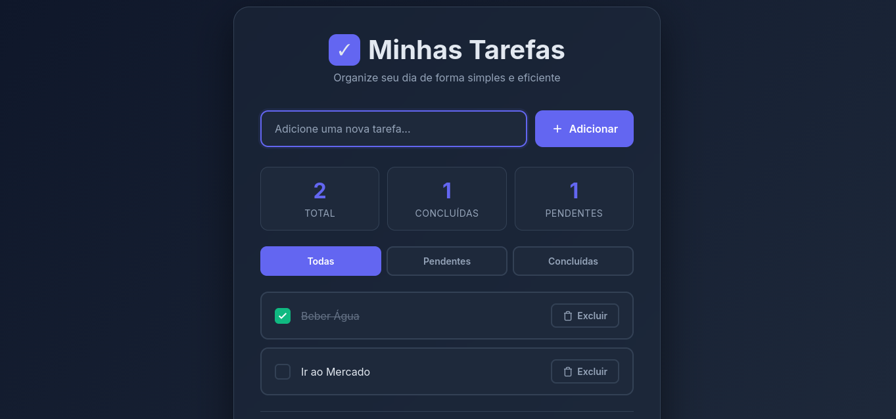

Front-End Developer
Criando experiências web modernas e atraentes com foco em design minimalista e identidade visual única.
Sou formado em Desenvolvimento de Sistemas pela ETEC Dr. Francisco Nogueira de Lima em Casa Branca, SP.
Nas redes sociais, sou conhecido como jotacazinho. Minha paixão é criar interfaces web que combinam funcionalidade com estética moderna e minimalista.
Com experiência em front-end, busco sempre a melhor identidade possível para cada projeto, garantindo que cada página web seja não apenas funcional, mas também visualmente atraente e memorável.
Estou sempre aberto a novos projetos e oportunidades